Portable Executable File Format
Getting to know the data structure used to manage executable code
C RunTime CRT
تعلمنا في لغة C ان الملفات التنفيذية يبدأ تنفيذها من الدالة الرئيسية main ولكن هذا غير صحيح بشكل كامل فكل ملف تنفيذي يبدأ من نقطة تُسمي نقطة البدء الأصلية original entry point EOP و التي تشير إلي مجموعة أخري من الأكواد من دورها تهيئة البرنامج للعمل من ثم نقل تنفيذ البرنامج للدالة الرئيسية ليبدأ تنفيذ برنامجنا، و يتم إنشاء تلك الأكواد عن طريق المُجمع Compiler و تُسمي اكواد بداية التشغيل startup code او C Runtime Code CRT.
و من مهام الـ CRT التعرف علي نص وسائط الدالة الرئيسية الذي قبل تهيئته يُعامل كنص واحد حيث يتولي الـ CRT فصله بستخدام المسافات بين اجزائه علي النحو التالي:
51program.exe hello world this is a string // treated as one single string before CRT 2 3// After CRT4// argv[0] argv[1] argv[2] argv[3] argv[4] argv[5] argv[6]5program.exe hello world this is a string و الـ CRT كذلك يقوم بتحضير الـ Environment Variable Array envp التي تسمح للبرنامج بالتعامل مع متغيرات البيئة Environment Variables والتي تسمح للمطور بمعرفة المسارات المُعرفة مسبقا في بيئة المستخدم كالمثال التالي:
1514/* To shorten example, not using argp */5int main (int argc, char *argv[], char *envp[])6{7 char *temp, *os;89 temp = getenv("TEMP");10 os = getenv("OS");1112 printf ("Your TEMP directory is %s and OS is %s.\n", temp, os);1314 return 0;15}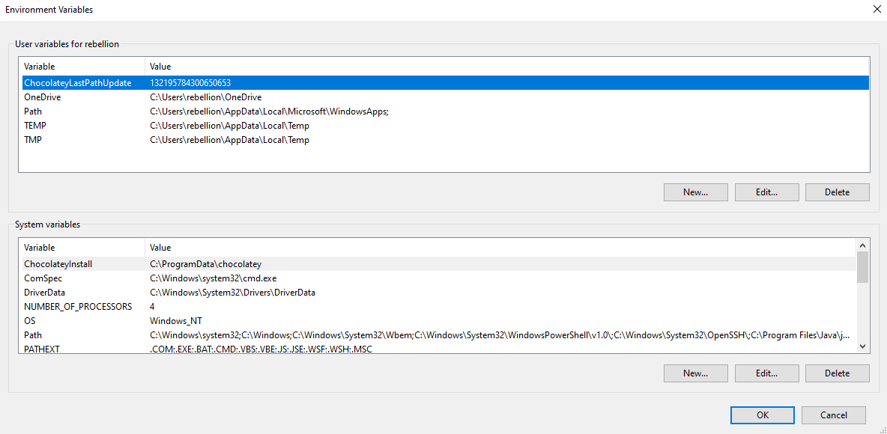
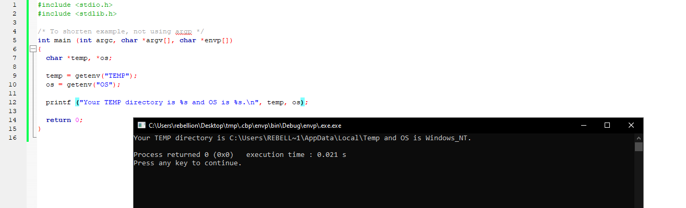
اما بالنسبة للبرامج الرسومية Graphical User Interface GUI Applications فيتم استخدام الدالة الرئيسية WinMain بدلا من main و التي تمتلك وسائطها الخاصة التي يقوم الـCRT ايضا بتهيئتها و تكون علي الشكل التالي:
61int CALLBACK WinMain(2 _In_ HINSTANCE hInstance,3 _In_ HINSTANCE hPrevInstance,4 _In_ LPSTR lpCmdLine,5 _In_ int nCmdShow6);و يدير الـ CRT التعامل مع القيمة المُرجعة للدالة الرئيسية و التي تمثل حالة إنتهاء البرنامج (القيمة المُرجعة0 مثلا تمثل إنتهاء البرنامج بدون اخطاء)، حيث غالبا ما يمررها الـ CRT للدالة ExitProcess او exit و التي تستخدم القيمة المُرجعة من الدالة الرئيسية كوسيط paramter، و عادة ما يكون لكل مُجمع الـ CRT الخاص به. للتوضيح قم بفتح البرنامج التنفيذي للمثال اعلاه في Ghidra و التي سبق لك تحميلها اثناء تهيئة مختبر التحليل الخاص بك، من ثم قم بإنشاء مشروع خاص Non-shared project و اختر المسار و الأسم الخاص به:
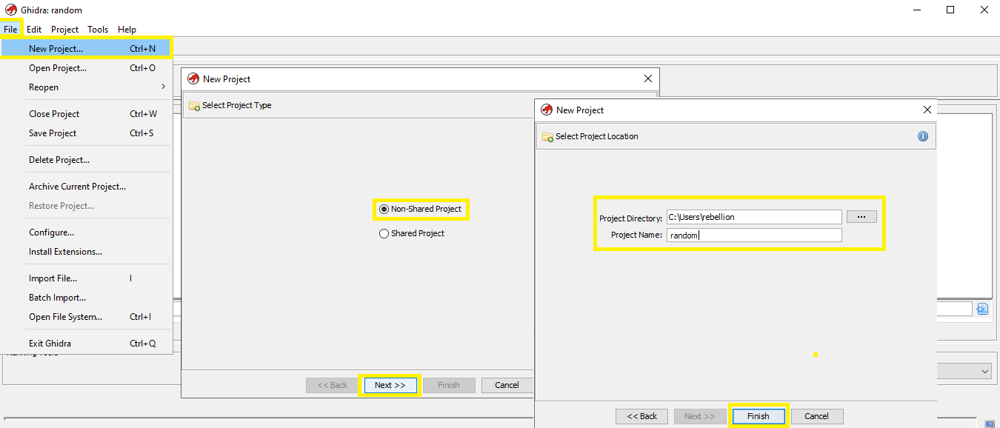
الأن يمكنك فقط تحميل الملف داخل المشروع من ثم إخبار ghidra بتحليل البرنامج بعدها قم بالذهاب لدالة الـ CRT المُعرفة بإسم mainCRTStartup_
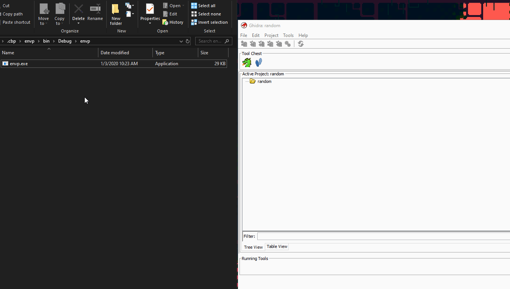
بستخدام نافذه Decompilation يمكننا استعادة شكل اقرب ما يكون للملف المصدري بلغة C مما يفيد كثيرا في تسريع عملية تحليل البرمجيات لأنه (في بعض الحالات فقط) يُغني عن قرائة الـ Disassembly، فكان يجب تعلم لغة C من البداية للتعامل مع ادوات الهندسة العكسية بشكل عام.
يمكننا هنا ان نري استخدام دوال المُجمع MinGW-gcc الخاصة بالـ CRT منها getmainargs___ و p__environ___
المسؤولين عن تهيئة الوسائط argc argv envp ، يمكننا كذلك رؤية الـ CRT يقوم بإستدعاء الدالة الرئيسية و تمرير الوسائط الثلاث لها من ثم تمرير القيمة المُرجعة من الدالة الرئيسية للدالة ExitProcess.
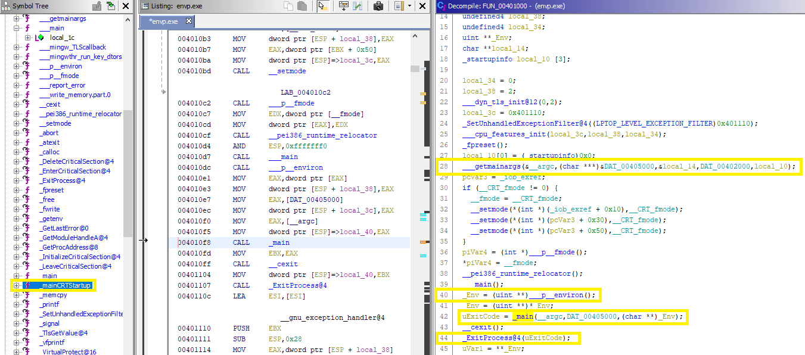
Portable Executable File format
Portable Executable PE هو تركيب من البيانات يحتوي علي المعلومات اللازمة ليتم تحميله و تنفيذه من قبل الـ PE Loader في نظام التشغيل Windows حيث يتم استخدام الـ PE File Structure لإنشاء ملفات تنفيذيه Executable Files مثال التي تمتلك امتداد
exesysdllوالتي تشترك في نفس تركيب الملف باختلاف مكان و غرض أستخدامها.

قبل التعمق في الـ PE File Format يجب ان نتطرق للمصطلحات Terminology التالية:
Moduleيشار به إلي الملفات التنفيذيه و قد يسمي Executable Image او Image للإختصار (سيتم الاشارة للملف التنفيذي في الذاكرة بـ module و علي القرص الصلب بـ Executable Image للتسهيل علي القارئ)Loaderيشار به لمجموعة من الـ Windows APIs المسؤولة عن تحميل الـ Module للذاكرة و بدء تشغيلهProcessيشار بها إلي الـ Module اثناء تشغيله في الذاكرةProcess Memoryيقصد بها الذاكرة المخصصة للـ ModuleBase Addressيشير إلي عنوان الذاكرة الإفتراضية Virtual Memory حيث سيتم تحميل الـ Module، و في حالة امتلاك اكثر من Module لنفس الـBase Addressمثال مكتبات الربط الديناميكية Dynamic-link library DLL، سيتم تحميل احدهم في الـ Base Address المٌعرف و الأخر في عنوان يشير لمكان أخر غير مشغول في الـ Virtual Memory و سيتم تصحيح الـ Base Address ليساوي ذلك العنوان المختلفVirtual Address VAيقصد به عنوان من عناوين الذاكرة الإفتراضيةRelative Virtual Address RVAيقصد به عنوان من عناوين الذاكرة الإفتراضية بعد طرح قيمة الـ base address من قيمتهImport Address Table IATهو مصفوفة من العناوين للدوال المراد تحميلها للذاكرة الإفتراضية للـ Process من مكتبات الربط الديناميكية المراد استخدامهاOffsetيشير لعنوان او مكان وجود البيانات في الـ Module ولكن علي القرص الصلب وليس الذاكرة (مثال عند فتح الملف بواسطة Hex Editor)- الملف الكائني
Object Fileهو ملف يستخدم كمدخل للمُربط linker الذي يتولي مهمة تحويله إلي Executable Image. جدير بالذكر ان المصطلع "ملف كائني" ليس له بالضرورة اي علاقة مع البرمجة الكائنية object-oriented programming - القسم
Sectionهو الوحدة الاساسية لتقسيم البيانات داخل الملفات التنفيذية، علي سبيل المثال يوجد قسم خاص بتعليمات لغة الألة و قسم خاص بالبيانات الخاصة بالبرنامج و هكذا.. و القسم يشبه الـ Memory Segment في معمارية Intel 8086 حيث أن كل الأقسام ستكون متجاورة عند تحميل الـ Executable Image من قبل Loader. الصورة التالية مثال لتوضيح التناسق مابين الـ raw addresses للـ sections و الـ virtual addresses :

و ينقسم الـ PE File إلي فرعين رئيسين:
- الترويسات headers
- الاقسام sections
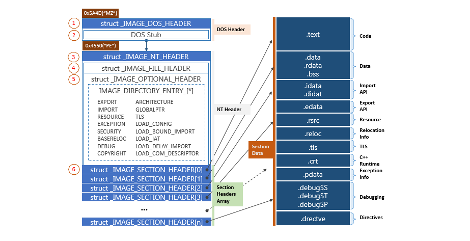
PE File Headers
اول قسمين (DOS Header و DOS stub) غير مهمين بالنسبة لنا؛ فالقسم الثاني (DOS stub) هو برنامج بحد ذاته مسؤول عن طباعة الرسالة This program cannot run in DOS mode عند محاولة تشغيله في MS-DOS و إنهاء عمل الملف لعجز MS-DOS عن التعامل مع الـ PE File Format:
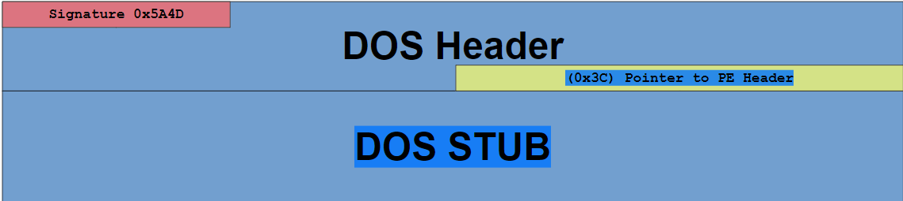
اما بالنسبة للـ DOS Headers فلا يهمنا منها غير معرفة أن الـ Magic Number يحتوي علي النص MZ و عند قراءة الملف التنفيذي من قبل الـ Loader فإنه يبحث عن هذه القيمة ليتأكد من صلاحية الـ PE File. يمكنك استخدام ادوات مثل PE bear و CFF explorer لعرض و تعديل محتوي الـ PE Files و تُسمي تلك الأدوات عادة بالـ PE Parsers:
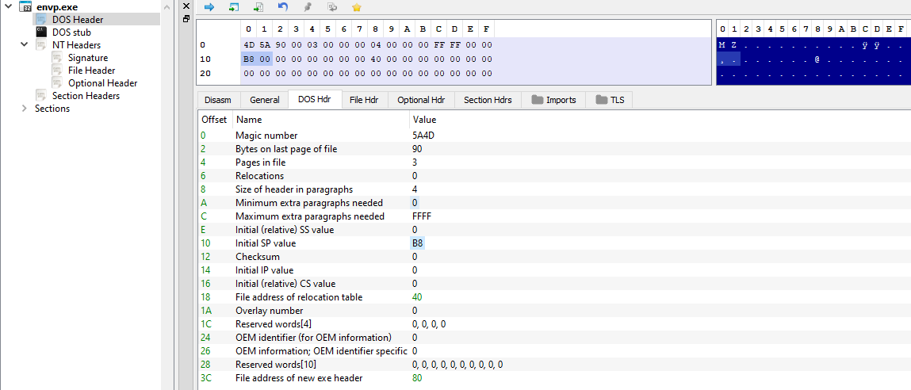
NT Headers
بعد ان علمنا أن بداية الـ PE Files تتكون من DOS Header و DOS Stub تبقي لنا معرفة من يتبعهم و هو الـ NT Headers التي تتضمن الـ Headers التالية:
PE signautre
بعد الـ MS-DOS stub و تحديدا عند الـ Offset المحدد بـ 0x3c يوجد bytes-4 تشير للـ offset حيث توجد الـ PE signature التي تقوم بتعريف الملف كـ PE executable image. عندما يتم تحميل الملف من قبل الـ Loader فإنه يتحقق من تلك الـ Signature و التي إن كانت تساوي النص PE متبوعا بصفرين null bytes فيتم اعتبار الملف صالح Valid PE
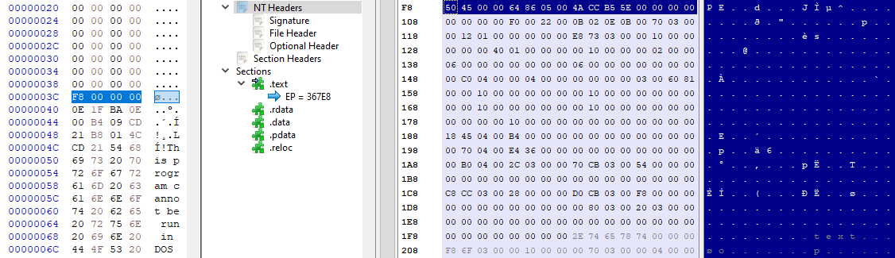
File header
الـ COFF file header او File header للإختصار هو ترويسة قياسية standard header يوجد في بداية الملفات الكائنية او مباشرة بعد الـ PE signature في الـ Executable images.
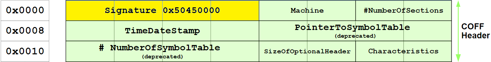
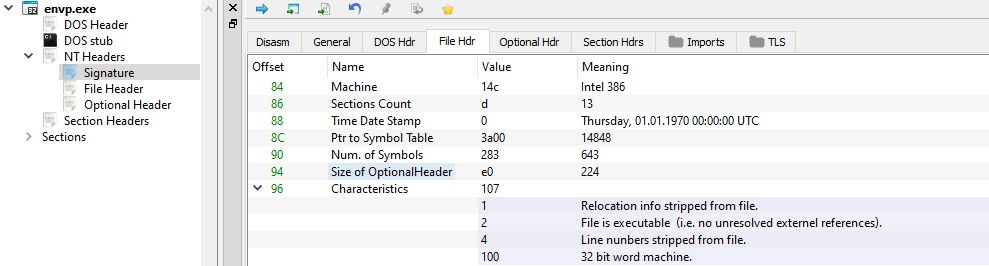
و يمتلك التركيبة Structre التالية:
91typedef struct _IMAGE_FILE_HEADER {2 WORD Machine;3 WORD NumberOfSections;4 DWORD TimeDateStamp;5 DWORD PointerToSymbolTable;6 DWORD NumberOfSymbols;7 WORD SizeOfOptionalHeader;8 WORD Characteristics;9} IMAGE_FILE_HEADER, *PIMAGE_FILE_HEADERMachineتمثل نوع المعامرية التي يمكن للملف التنفيذي العمل عليها، لا يمكن للـ Executable image العمل علي اي معمارية غير المحددة او معمارية يمكنها محاكاة emulate تلك المعمارية.Machineيمكن ان تحتوي واحدة من 22 قيمة يهمنا منها القيم الثلاثة التالية:31IMAGE_FILE_MACHINE_I386 0x014c x862IMAGE_FILE_MACHINE_IA64 0x0200 Intel Itanium3IMAGE_FILE_MACHINE_AMD64 0x8664 x64NumberOfSectionsو يمثل عدد الأقسام في جدول الأقسام section table الذي يتبع الـ headers مباشرةTimeDateStampو يمثل وقت و تاريخ إنشاء الـ Executable image عن طريق المُربط Linker حسب الوقت و التاريخ في إعدادات النظام الذي تمت فيه عملية الربطPointerToSymbolTableيحمل الـ offset الخاص بالـ symbol table او القيمة0في حالة عدم وجود symbol tableNumberOfSymbolsيحمل عدد الـ symbols في symbol tableSizeOfOptionalHeaderيحمل حجم الترويسة الإختيارية optional headerCharacteristicsو هي مجموعة من الرايات flags تحدد خصائص و طبيعة الملف التنفيذي حيث يمكنها ان تحمل واحدة او عدة قيم من القيم التالية:141IMAGE_FILE_RELOCS_STRIPPED 0x0001 Relocation information was stripped from the file.2IMAGE_FILE_EXECUTABLE_IMAGE 0x0002 The file is executable.3IMAGE_FILE_LINE_NUMS_STRIPPED 0x0004 COFF line numbers were stripped from the file.4IMAGE_FILE_LOCAL_SYMS_STRIPPED 0x0008 COFF symbol table entries were stripped from file.5IMAGE_FILE_AGGRESIVE_WS_TRIM 0x0010 Aggressively trim the working set.6IMAGE_FILE_LARGE_ADDRESS_AWARE 0x0020 The application can handle addresses larger than 2 GB.7IMAGE_FILE_BYTES_REVERSED_LO 0x0080 The bytes of the word are reversed.8IMAGE_FILE_32BIT_MACHINE 0x0100 The computer supports 32-bit words.9IMAGE_FILE_DEBUG_STRIPPED 0x0200 Debugging information was removed.10IMAGE_FILE_REMOVABLE_RUN_FROM_SWAP 0x0400 run from swap file If the image is on removable media.11IMAGE_FILE_NET_RUN_FROM_SWAP 0x0800 run from swap file If the image is on the network.12IMAGE_FILE_SYSTEM 0x1000 The image is a system file.13IMAGE_FILE_DLL 0x2000 The image is a DLL file.14IMAGE_FILE_UP_SYSTEM_ONLY 0x4000 The file should be run only on a uniprocessor computer.
IMAGE_FILE_RELOCS_STRIPPEDو يشير إلي أن الملف لا يحتوي علي عمليات إعادة تعيين للـ base address و لذلك يجب تحميله في الـ base address المُفضل له و المُعرف داخل الـImageBaseفي الـ optional header. في حالة ان ذلك العنوان غير متاح سيبلغ loader عن خطأIMAGE_FILE_EXECUTABLE_IMAGEو يشير إلي ان الـ Executable image صالحة و يمكن تشغيلها. عدم تحديد هذه الراية يشير إلي وجود خطأ في عملية الربط linking errorIMAGE_FILE_LARGE_ADDRESS_AWAREتشير هذه الراية إلي امكانية الـ Process علي التعامل مع عناوين الذاكرة ما فوق الـ 2gigabytes بمعني ان الـ process يمكنها ان تشغل مساحة من الذاكرة اكثر من 2gigabytesIMAGE_FILE_32BIT_MACHINEالـ Executable Image تعمل علي جهاز يدعم الـ 32bit wordIMAGE_FILE_DEBUG_STRIPPEDمعلومات تنقيح الملف Debugging information و التي تتضمن اسماء الدوال و المتغيرات من الملف المصدري قد تمت ازالتهاIMAGE_FILE_REMOVABLE_RUN_FROM_SWAPاذا كانت الـ Executable Image مُخزنة علي وسيط قابل للإزالة removable media مثال الـ USB قم بتحميله بشكل كامل و انسخه في الـ swapIMAGE_FILE_SYSTEMالـ Executable Image ملف من ملفات النظام و ليست من ملفات المستخدمIMAGE_FILE_DLLالـ Executable Image مكتبة من مكتبات الربط الديناميكي dynamic-link library DLLIMAGE_FILE_UP_SYSTEM_ONLYالـ Executable Image يجب ان تعمل فقط علي جهاز احادي المعالج uniprocessor machine
الرايات الباقية غير مستخدمة و يجب ان تساوي القيمة 0.
Optional Header
كل Executable Image تمتلك ترويسة اختيارية Optional Header و الذي يوفر للـ loader معلومات يحتاجها لتشغيل الملف، كما يشير اسم الـ header فهو اختياري حيث لا تحتاج بعض الملفات (خصوصا الملفات الكائنية) له، علي عكس الـ Executable Images فهو ضروري بالنسبة لها.

و يتكون الـ Optional Header من الأجزاء الثلاثة التالية:
الحقول القياسية Standard fields المُعرفة في كل تطبيقات الـ Optional Header
- الـ offset الخاص بالبدء دائما
0 - الحجم في
PE32يساوي28في+PE32يساوي24
- الـ offset الخاص بالبدء دائما
الحقول الخاصة بـ Windows فقط Windows-specific fields و هي حقول إضافية لدعم خواص داخل نظام تشغيل Windows مثل الـ subsystems
- الـ offset الخاص بالبدء دائما في
PE32يساوي28في+PE32يساوي24 - الحجم في
PE32يساوي68في+PE32يساوي88
- الـ offset الخاص بالبدء دائما في
موجهات البيانات Data directories يحمل العناوين و الأحجام لجداول بيانات خاصة داخل الـ Executable image مثال import table و الـ export table.
- الـ offset الخاص بالبدء دائما في
PE32يساوي96في+PE32يساوي112 - الحجم مُتغير
- الـ offset الخاص بالبدء دائما في
و الـ Optional Header يمتلك التركيب التالي:
371typedef struct _IMAGE_OPTIONAL_HEADER {2 /* Start of Standard Fields */3 WORD Magic;4 BYTE MajorLinkerVersion;5 BYTE MinorLinkerVersion;6 DWORD SizeOfCode;7 DWORD SizeOfInitializedData;8 DWORD SizeOfUninitializedData;9 DWORD AddressOfEntryPoint;10 DWORD BaseOfCode;11 DWORD BaseOfData; /* PE32 only */12 /* End of Standard Fields */ 13 /* Start of Windows-Specific Fields */14 DWORD ImageBase;15 DWORD SectionAlignment;16 DWORD FileAlignment;17 WORD MajorOperatingSystemVersion;18 WORD MinorOperatingSystemVersion;19 WORD MajorImageVersion;20 WORD MinorImageVersion;21 WORD MajorSubsystemVersion;22 WORD MinorSubsystemVersion;23 DWORD Win32VersionValue;24 DWORD SizeOfImage;25 DWORD SizeOfHeaders;26 DWORD CheckSum;27 WORD Subsystem;28 WORD DllCharacteristics;29 DWORD SizeOfStackReserve;30 DWORD SizeOfStackCommit;31 DWORD SizeOfHeapReserve;32 DWORD SizeOfHeapCommit;33 DWORD LoaderFlags;34 DWORD NumberOfRvaAndSizes;35 /* End of Windows-Specific Fields */ 36 IMAGE_DATA_DIRECTORY DataDirectory[IMAGE_NUMBEROF_DIRECTORY_ENTRIES];37} IMAGE_OPTIONAL_HEADER32, *PIMAGE_OPTIONAL_HEADER32;Magicو يمثل حالة الـ Executable Image إن كانتPE32او+PE32اوROMحيث يمكنه ان يحمل واحدة من القيم التالية:51IMAGE_NT_OPTIONAL_HDR_MAGIC The file is an executable image:2IMAGE_NT_OPTIONAL_HDR32_MAGIC 0x10b in a 32-bit application [PE32].3IMAGE_NT_OPTIONAL_HDR64_MAGIC 0x20b in a 64-bit application [PE32+].45IMAGE_ROM_OPTIONAL_HDR_MAGIC 0x107 The file is a ROM image.MajorLinkerVersionيحمل رقم الإصدار الرئيسي للمُربط LinkerSizeOfCodeحجم قسم التعليمات (الأكواد) المراد تنفيذها او مجموع الأقسام إن كان هناك اكثر من قسم واحد للتعليمات.SizeOfInitializedDataحجم قسم البيانات التي تم تهيئتها أو مجموع كل أقسام البيانات في حالة وجود أكثر من قسمSizeOfUninitializedDataحجم قسم البيانات الغير مهيئ او مجموع كل أقسام البيانات الغير مهيئة في حالة وجود أكثر من قسمImageBaseالعنوان المُفضل لبداية الـ Module عند تحميله في الذاكرة الأفتراضية، هذه القيمة عادة ما تساوي0x10000000في مكتبات الربط الديناميكية و0x00400000في الملفات التنفيذية كقيمة تلقائية default valueAddressOfEntryPointيحمل الـ Relative Virtual Address RVA لدالة بداية البرنامج في الملفات التنفيذية، عند تشغيل البرنامج يقرأ الـ Loader هذه القيمة ليبدأ من عندها التنفيذ. جدير بالذكر أن تلك الدالة يشار إليها في ادوات الهندسة العكسية بأسماء مثلstartوentryوEntryPoint

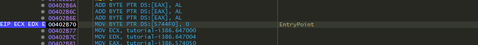
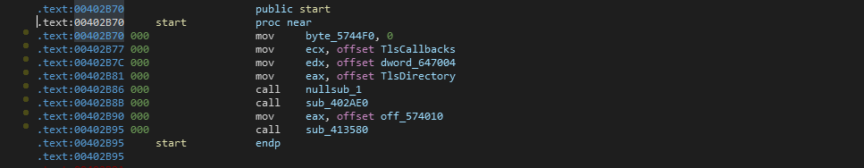
BaseOfCodeيحمل الـ Relative Virtual Address لبداية قسم التعليماتBaseOfDataيحمل Relative Virtual Address لبداية قسم البياناتSectionAlignmentيحمل قيمة المحاذاة للأقسام التي تم تحميلها في الذاكرة بمعني انه إن كانت قيمته تساوي0x1000فسيبدأ كل قسم من عنوان بقيمة هذه المحاذاة في الذاكرة الأفتراضيةFileAlignmentمثله مثل الـSectionAlignmentلكن يتم تطبيقه علي القرص الصلب بدلا من الذاكرة الإفتراضية، و من المهم معرفة ان قيمة الـFileAlignmentلا يمكن ان تكون اكبر من قيمة الـSectionAlignmentMajorOperatingSystemVersionيحمل رقم الإصدار الرئيسي لنظام التشغيل المطلوبMinorOperatingSystemVersionيحمل رقم الإصدار الثانوي لنظام التشغيل المطلوبMajorImageVersionيحمل رقم الإصدار الرئيسي للـ ModuleMinorImageVersionيحمل رقم الإصدار الثانوي للـ ModuleMajorSubsystemVersionيحمل رقم الإصدار الرئيسي للنظام الفرعي subsystemMinorSubsystemVersionيحمل رقم الإصدار الثانوي للنظام الفرعي subsystemWin32VersionValueهذا العضو محجوز ويجب أن يساوي0SizeOfImageيحمل قيمة تساوي حجم الـ Executable Image متضمنة جميع الـ Headers و أخذة بالأعتبار المحاذاة بين جميع الأقسام (الحجم الكلي للـ Module في الذاكرة الإفتراضية)SizeOfHeadersيحمل حجم الـ headers مضاف لها حجم جدول الأقسام section table، اي انه يساوي حجم الملف ناقص حجم جميع الأقسامSizeOfStackReserveاقصي مساحة يمكن حجزها للمكدس stack أثناء تشغيل البرنامجSizeOfStackCommitحجم المساحة المخصصة للمكدس عند بدء البرنامجSizeOfHeapReserveاقصي مساحة يمكن حجزها للـ Heap المحلي (الخاص بالـExecutable Image) أثناء تشغيل البرنامجSizeOfHeapCommitحجم المساحة االمخصصة للـ Heap عند بدء البرنامجNumberOfRvaAndSizesعدد السجلات في الـDataDirectoryحيث كل سجل يصف موقع و حجم البيانات.
CheckSum
Checksum عبارة عن خوارزمية تجزئة بسيطة basic hashing algorith يتم استخدامها للتحقق من صحة الملفات integrity، اي تعديل في البيانات المُدخلة لهذا النوع من الخوارزميات مهما كانت بساطته سيؤدي إلي تغير كبير في قيمة الـ Checksum النهائية. و تتمثل فائدة الـ Checksum في التأكد من سلامة و عدم تغير محتوي الملف التنفيذي بعد عملية التجميع حيث يتم اثناء عملية التجميع حساب قيمته و تخزينها في حقل الـ Checksum داخل الـ Optional header.
و بشكل اساسي، قبل تحميل الـ Device Drivers او الـ DLLs التي يتم تحميلها أثناء بدء التشغيل Boot time او في الـ Modules الخاصة بالنظام، يتم حساب الـ Checksum الخاص بالملف و التأكد من صحته و مطابقته لمحتوي الـ Checksum المُعرف من المُجمع. في حالة عدم التطباق يتم اعتبار الملف غير صالح او تالف Corrupted. و من الجدير بالذكر ان تلك العملية من التحقق لا تتم علي الملفات التنفيذية العادية و في حالة عدم تطابق القيمتين سيظل من الممكن تشغيل البرنامج من قبل المستخدم.
يحمل حقل الـ Checksum قيمة الـ Cyclic Redundancy Check CRC الخاص بالـ Executable image ففي حالة تعديل الملف مثال عمل Patch لوظيفة من وظائفه فلن يتطابق الـ Checksum و رغم سهولة تغيير قيمته ليوافق حالة الـ Executable image بعد التعديل إلا انه في حالة عدم تعديل قيمته يكون وسيلة جيدة لتحديد ما اذا كان قد تم التلاعب بمحتوي الـ Executable image، يمكنك التأكد من صحة الـ Checksum عن طريق ادوات مثل PEstudio
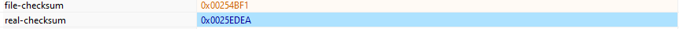
Subsystem و يشير إلي النظام الفرعي المستخدم في تشغيل البرنامج، اشهر ثلاث قيم يحتويها الـ Subsystem optional header هم:
IMAGE_SUBSYSTEM_NATIVEيشير إلي ان الملف التنفيذي عبارة عن device driversIMAGE_SUBSYSTEM_WINDOWS_GUIيشير إلي ان الملف التنفيذي يمتلك واجهة رسوميةIMAGE_SUBSYSTEM_WINDOWS_CUIيشير إلي ان الملف التنفيذي عبارة عن console application
31IMAGE_SUBSYSTEM_NATIVE 1 Device drivers and native Windows processes (.sys driver) 2IMAGE_SUBSYSTEM_WINDOWS_GUI 2 The Windows graphical user interface (GUI) subsystem3IMAGE_SUBSYSTEM_WINDOWS_CUI 3 The Windows character subsystem (console) DllCharacteristics
يحمل خصائص مكتبات الربط الديناميكية الخاصة بـ الـ Module و من اهم تلك الخصائص:
81DYNAMIC_BASE 0x0040 The DLL can be relocated at load time2FORCE_INTEGRITY 0x0080 Code integrity checks are forced3NX_COMPAT 0x0100 The image is compatible with data execution prevention DEP4NO_ISOLATION 0x0200 The image is isolation aware, but should not be isolated5NO_SEH 0x0400 The image does not use structured exception handling SEH6NO_BIND 0x0800 Do not bind the image.7WDM_DRIVER 0x2000 A WDM driver.8TERMINAL_SERVER_AWARE 0x8000 Terminal Server aware.IMAGE_DLLCHARACTERISTICS_DYNAMIC_BASE
يشير إلي إمكانية تغير عناوين مكتبات الربط الديناميكية في الذاكرة الأفتراضية، في النسخ الأقدم من نظام التشغيل Windows كان يتم تحميل الملفات الخاصة بالنظام في اماكن ثابتة في الذاكرة و الذي كان يمثل قاعدة للثغرات التي تستغل معرفتها بتلك الأماكن و الـ Processes المعروفة بتصالها معها. النسق العشوائي لمساحة العناوين Address Space Layout Randomization ASLR عمل علي حل تلك المشكلة بإعطاء عناوين عشوائية للملفات الخاصة بالنظام و البرامج عامة عند تحميلها للذاكرة مما جعل تخمين العناوين الصحيحة لنجاح تنفيذ ثغرة اصعب.
من Windows 7 صعودا لما بعدها يتم استخدام الـ ASLR بشكل تلقائي لجميع الـ Processes إلا إذا عرف البرنامج نفسه علي انه غير متوافق مع تلك الألية بالتعديل علي الـ IMAGE_DLLCHARACTERISTICS_DYNAMIC_BASE. و بالرغم من اهمية تلك الألية كوسيلة للحماية من الثغرات إلا ان التخلص من الـ ASLR يصبح عمليا في تحليل البرمجيات الخبيثة في العديد من الحالات مثل التعامل مع اكثر من اداة كمثال x64dbg و Ghidra فبدون إيقاف الـ ASLR ستظهر نفس البيانات و تعليمات لغة الألة في عناوين ذاكرة مختلفة بشكل عشوائي مما يجعل الوصول لها ابطيء، مثال:
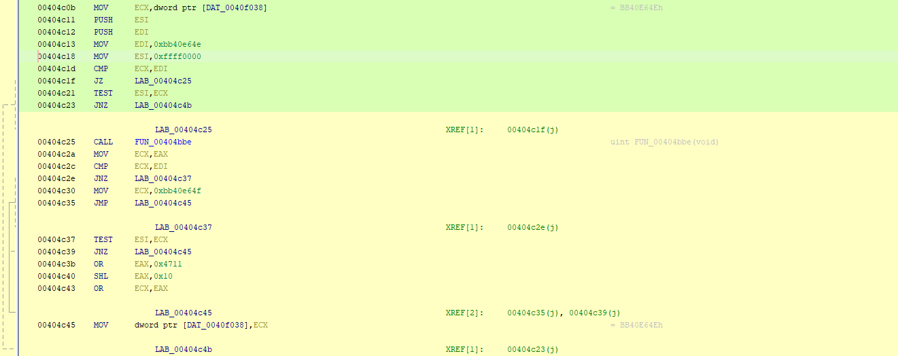
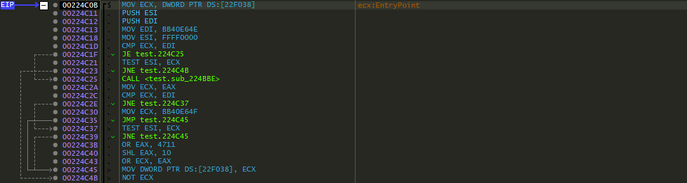
يرجع ذلك إلي أن Ghidra ببساطة ستقوم بالتعامل مع عناوين الذاكرة بناء علي الـ Base Address المُعرف داخل الـ ImageBase في الـ optional header اما x64dbg لكونه منقح Debugger و يقوم بتحميل البرنامج في كل مرة للذاكرة و تشغيله فستكون العناوين مختلفة في كل مرة. يمكننا إيقاف الـ ASLR عن طريق ادوات مثل CFF Explorer بإزالة الـ DLL can move علي النحو التالي:
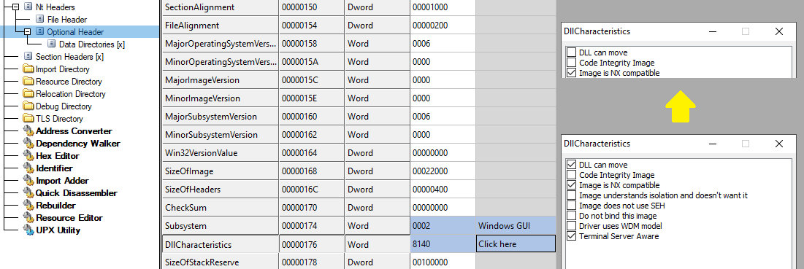
الأن بعد حفظ الملف يمكننا تشغيله بـ x64dbg للتأكد من توقف الـ ASLR و تطابق عناوين الذاكرة:
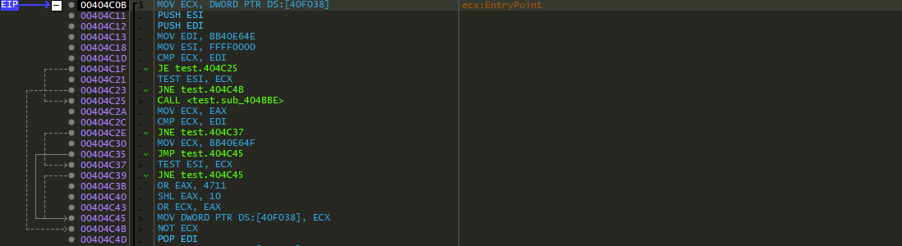
IMAGE_DLLCHARACTERISTICS_NO_SEH
الإستثناء Exception هو حدث event يحدث أثناء تنفيذ البرنامج، و يتطلب لحدوثة خروج البرنامج عن إطار عمله العادي و السليم. و هناك نوعان رئيسيان من الإستثناءات:
- إستثناءات من قبل الجهاز Hardware Exceptions تتم بواسطة وحدة المعالجة المركزية CPU حيث يمكن ان تنتج عن محاولة تنفيذ تسلسل معين من التعليمات مثل القسمة علي الصفر او محاولة الوصول إلي عنوان غير صالح في الذاكرة.
- إستثناءات من قبل البرمجيات Software Exceptions تتم بواسطة البرمجيات نفسها او نظام التشغيل، علي سبيل المثال يمكن للنظام اكشاف متي يتم تمرير وسيط غير صالح لدالة من الدوال
الـ Structured Exception Handling SEH هي آلية للتعامل مع كل من استثناءات الأجهزة والبرامج حيث توفر للمطور كتابة برنامج يتعامل مع الـ Hardware Exceptions والـ Software Exceptions بنفس الطريقة مما يوفر التحكم الكامل في معالجة الإستثناءات و تصحيحها، يمكنك تخيل الـ Exception Handling علي انه القدرة علي تنفيذ تعليمات برمجية في حالة فشل تعليمات أخري.
البرنامج في المثال التالي تمت كتابته بلغة ++C و يحاول القسمة علي الصفر مما سيؤدي إلي الإستثناء 0xC0000094: Integer division by zero و تنفيذ الـ Block داخل finally__ حيث سيطبع النص Exception handled using SEH:
111int main() {4 __try {5 int x, y = 0;6 x = 5 / y;7 }8 __finally {9 printf("Exception handled using SEH");10 }11}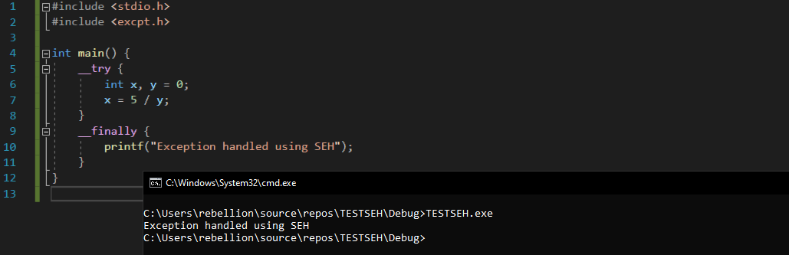
بالنسبة للراية IMAGE_DLLCHARACTERISTICS_NO_SEH فعند تفعيلها لن يعمل الـ SEH ولن يدرك البرنامج حدوث Exception ليقوم بتنفيذ تعليمات الإستثناء Exception code، لاحظ عدم طباعة شيء بعد التعديل علي البرنامج:
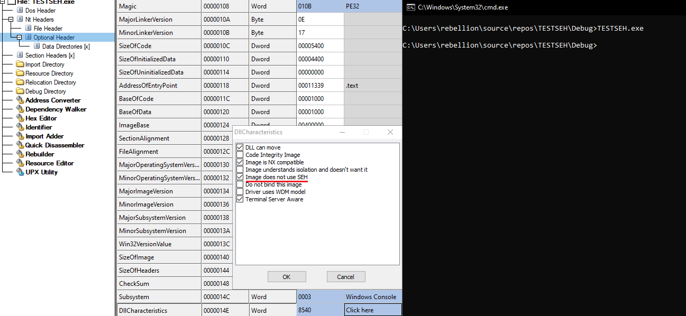
IMAGE_DLLCHARACTERISTICS_NO_ISOLATION
قد تحتوي الـ Executable Image بغض النظر عن طريقة الربط المُستخدمة لإنشائها (الربط الثابت او الديناميكي) علي مجموعة من البيانات metadata تصف كيفية ارتباط العناصر الموجودة داخلها ببعضها البعض. فالـ assemlby manifest او الـ manifest للإختصار يحتوي على جميع البيانات الأولية اللازمة لتحديد إصدار الـ Executable image وهوية الأمان security identity التابعة لها، وجميع البيانات الوصفية اللازمة لتحديد ومعالجة الموارد resources، و يمكن تخزين الـ manifest إما داخل الـ Executable image نفسها سواء كانت ملف تنفيذي او مكتبة ربط ديناميكية او في Executable image منفصلة فقط تحمل الـ assembly manifest. الصورة التالية توضح الاختلاف في طريقة تخزين الـ manifest:

و يؤدي الـ assembly manifes الوظائف التالية:
- تحديد هوية الملف التنفيذي و رقم إصداره و جعله ذاتي الوصف self-describing
- تحديد التبعيات dependencies التي تعتمد عليها الـ Executable image للعمل و المنصات التي تدعمها
- الصلاحيات و مستوي الثقة الذي تطلبه الـ Executable image للعمل
مثال علي الشكل العام للـ manifes:
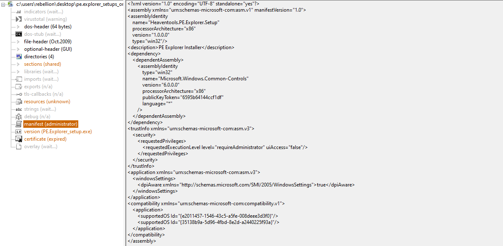
رجوعا للـ IMAGE_DLLCHARACTERISTICS_NO_ISOLATION فهو ما يحدد ما إذا كان الـ loader سيراجع الـ manifest قبل تحميل الـ Executable image للذاكرة ام لا، إذا كان مُفعلا فلن يراجعه الـ loader و لن يتم العمل بما يحدده.
المثال التالي يوضح العملية السابق ذكرها، في البداية قم بإنشاء برنامج بسيط بستخدام CodeBlocks فقط يقوم بكتابة الجملة "Hello World":
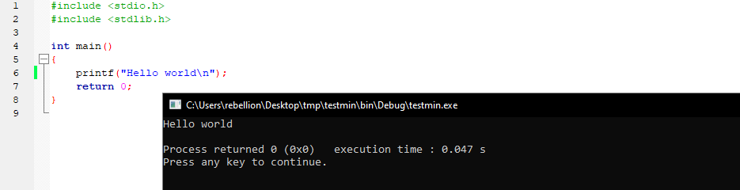
بفتح الملف داخل اداة مثل PEstudio ستجد انه ما من manifest بالأساس:

الأمر بسيط فبستخدام أداة مثل ResEdit يمكننا إضافة manifest tamplate علي النحو التالي:
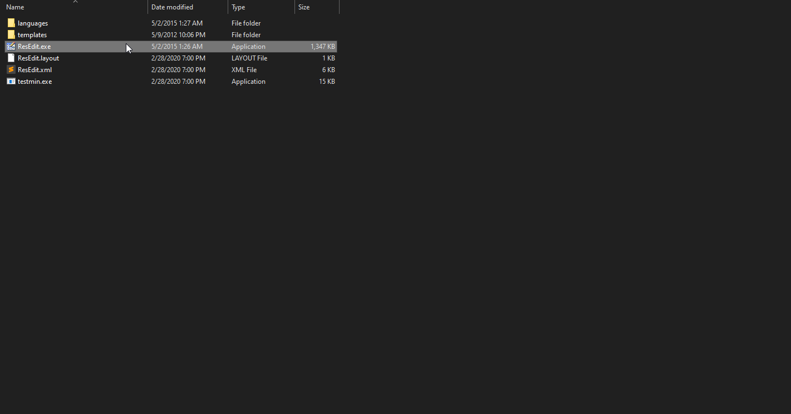
الأن دعنا نقم بالتعديل علي الـ manifest tamplate بستخدام اداة مثل PLB Manifest Editor:
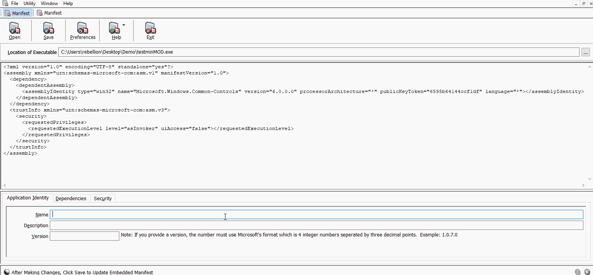
لاحظ بعد تعديل الـ requestedExecutionLevel من asInvoker إلي requireAdministrator يتطلب الأن لتشغيل البرنامج إعطائه صلاحيات Administrator
21<!-- before -->2<requestedExecutionLevel level="asInvoker" uiAccess="false"/>21<!-- After -->2<requestedExecutionLevel level="requireAdministrator" uiAccess="false"></requestedExecutionLevel> 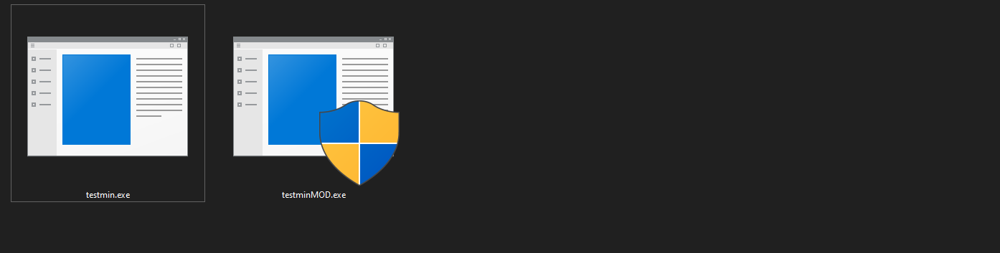
مع ذلك بالتعديل علي IMAGE_DLLCHARACTERISTICS_NO_ISOLATION سيعمل البرنامج بشكل طبيعي نتيجة لأن الـ loader لن يراجع الـ mainfiest بحثا عما إذا كان البرنامج يتطلب صلاحيات معينة للعمل ام لا و سيباشر العمل بالصلاحيات التلقائية التي يعطيها له المستخدم (تماما مثلما يحدث عند استخدام asInvoker)
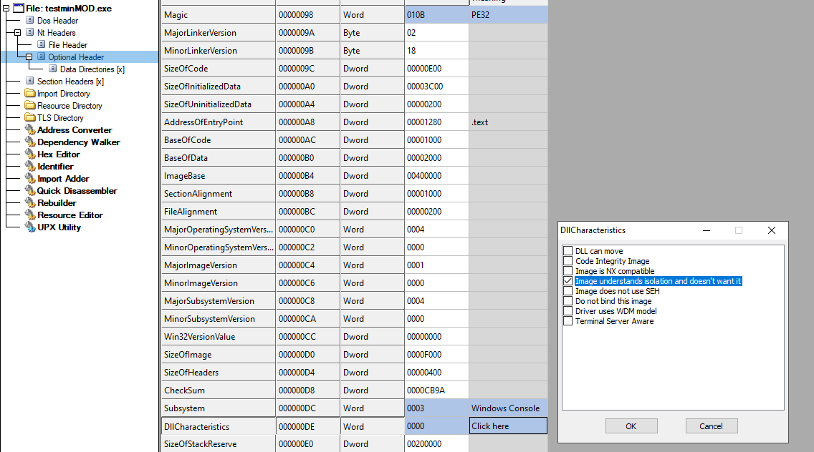
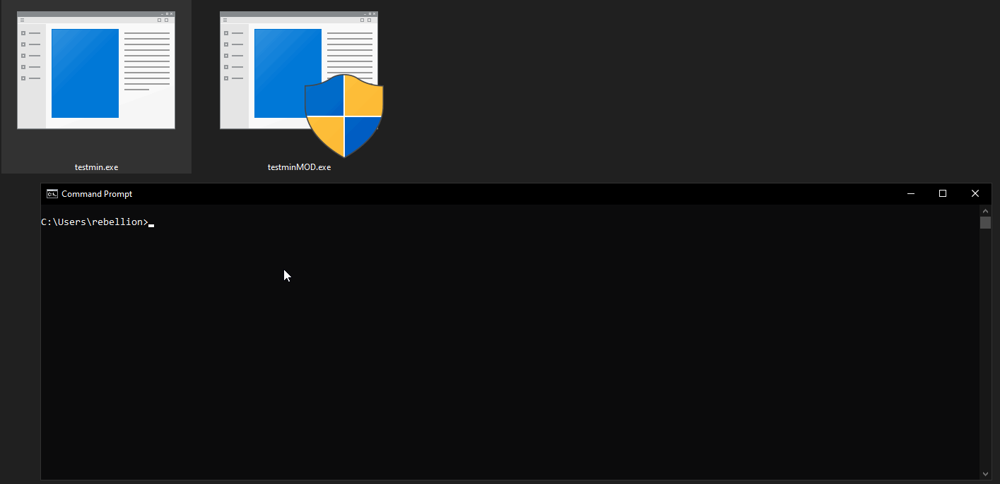
IMAGE_DLLCHARACTERISTICS_FORCE_INTEGRITY يشير إلي لزوم التحقق من سلامة الـ Module قبل تحميله.
IMAGE_DLLCHARACTERISTICS_NX_COMPAT بداية من Windows Vista تضمن نظام التشغيل Windows خاصية جديدة تهدف للحماية من الهجمات الخارجية مثل الـ Buffer overflow و يشار لها بالـ Data Execution Prevention DEP او No-Execute NX و التي تمنع تنفيذ تعليمات لغة الألة من مناطق الذاكرة التي لا تمتلك إذونات التنفيذ Execute premissions و الـ IMAGE_DLLCHARACTERISTICS_NX_COMPAT يمكنها من استخدام خاصية الـ DEP علي Windows Vista فيما بعدها.
IMAGE_DLLCHARACTERISTICS_NO_BIND عند تفعيل تلك الراية لن يتم قيد الـ Executable image.
IMAGE_DLLCHARACTERISTICS_WDM_DRIVER الـ Executable Image عبارة عن WDM driver.
IMAGE_DLLCHARACTERISTICS_TERMINAL_SERVER_AWARE عندما لا يكون البرنامج علي دراية بالخادم الطرفي Terminal Server يقوم الخادم
الطرفي بإجراء تعديلات معينة علي البرنامج لجعله يعمل بشكل صحيح في بيئة متعددة المستخدمين. إذا كان التطبيق علي علم به فسيعمل البرنامج بشكل طبيعي.
DataDirectory
يحمل مؤشر لمصفوفة من التركيب IMAGE_DATA_DIRECTORY
41typedef struct _IMAGE_DATA_DIRECTORY { 2 DWORD VirtualAddress; 3 DWORD Size; 4} IMAGE_DATA_DIRECTORY, *PIMAGE_DATA_DIRECTORY;و يأتي في نهاية الـ optional header و يمثل واحدة من اهم تراكيبه بسبب ما يوفره حيث ان وظيفة مصفوفة الـ DataDirectory هي اعطاء المعلومات عن أين يمكن ايجاد مكونات الـ Executable image مثال الدوال التي يحتاجها البرنامج من مكتبات الربط الديناميكية او الموارد التي سيستخدمها البرنامج اثناء عملية التشغيل لأخره حيث ان كل عنصر من عناصر المصفوفة يحمل نوع التركيب IMAGE_DATA_DIRECTORY_ و الذي يحتوي علي الـ RVA الخاص بالرموز النصية strings او الجداول tables و حجمها.
فيما يلي عناصر مصفوفة الـ DataDirectory:-
Export Tableيحمل الـRVAو الحجم للـ export table والذي في حالة مكبات الربط الديناميكية سيحمل عناوين الدوال بالمكتبةImport Tableيحمل الـRVAو الحجم للـ import table و الذي سيحمل عناوين الدوال المستخدمة بالبرنامجResource Tableيحمل الـRVAو الحجم للـ Resource Table الذي يتم فيه تخزين البيانات مثل ملفات الصوت و الصور المستخدمة بالبرنامجException Tableيحمل الـRVAو الحجم للإستثناءات Execeptions داخل البرنامجCertificate Tableيحمل الـRVAو الحجم للـ attribute certificateBase Relocation Tableيحمل الـRVAو الحجم للـ The base relocation tableDebugيحمل عنوان بداية الـ debug information و حجمهاGlobal Ptrيحمل الـRVAالخاص بقيمة الـ global pointer registerTLS Tableاو الـ thread local storage table و يحمل الـRVAو الحجم للـ TLSLoad Config Tableيحمل الـRVAو الحجم للـ load configuration tableBound Importيحمل الـRVAو الحجم للـ bound import tableImport Address Table IATيحمل الـRVAو الحجم للـ import address tableDelay Import Descriptorيحمل الـRVAو الحجم للـ delay import descriptorCLR Runtime Headerيحمل الـRVAو الحجم للـ common language runtime header
Section Table
كل صف من صفوف الـ section table هو فالواقع header، و يأتي مكان الـ section table بعد الـ optional header مباشرة حيث ان الـ file header لا يحمل مؤشر لعنوان بداية الـ section table، بدلا من ذلك يتم تحديد موقع الـ section table عن طريق حساب موقع الـ byte الأولي بعد الـ headers، و يتم تحديد عدد عناصر الـ section table عن طريق الـ NumberOfSections من الـ file header مع مراعاة المحاذا في عناوين و احجام الـ sections بما يوافق الـ SectionAlignment من الـ optional header.
و يمتلك كل section header داخل الـ section table التركيب strcutre التالي:
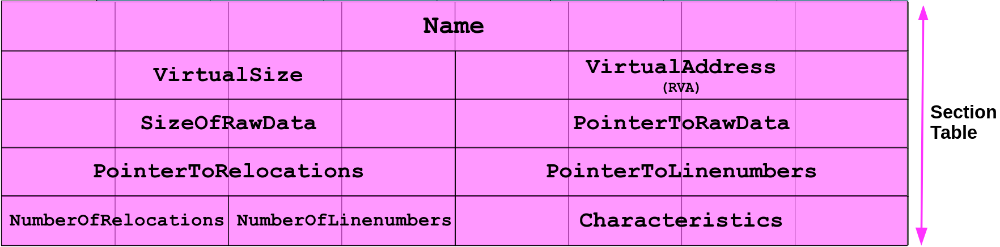
و الـ Section Table عبارة عن مصفوفة من التراكيب من نوع IMAGE_SECTION_HEADER_:
151typedef struct _IMAGE_SECTION_HEADER {2 BYTE Name[IMAGE_SIZEOF_SHORT_NAME];3 union {4 DWORD PhysicalAddress;5 DWORD VirtualSize;6 } Misc;7 DWORD VirtualAddress;8 DWORD SizeOfRawData;9 DWORD PointerToRawData;10 DWORD PointerToRelocations;11 DWORD PointerToLinenumbers;12 WORD NumberOfRelocations;13 WORD NumberOfLinenumbers;14 DWORD Characteristics;15} IMAGE_SECTION_HEADER, *PIMAGE_SECTION_HEADER;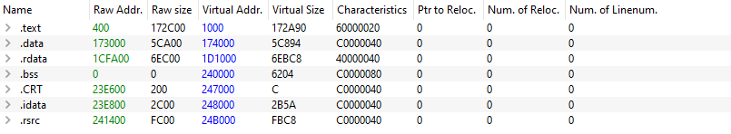
Nameيحمل نص من نوع UTF-8 يتم فيه تخزين اسم القسم ولا يمكن لهذا الأسم ان يتعدي طوله8احرف.VirtualSizeيحمل الحجم الكلي للقسم عند تحميله في الذاكرة فإن كان حجمه اكبر من حجمSizeOfRawDataيتم مليئ المساحة الذائدة بالقيمة0zero-padded.VirtualAddressيحمل الـRVAللـ byte الأولي من الـ sectionSizeOfRawDataيحمل الحجم المبدئي للـ section كـ raw data داخل الـ Executable Image والذي يتوافق قيمته مع محاذاة الـFileAlignmentمنIMAGE_OPTIONAL_HEADERPointerToRawDataيحتوي علي مؤشر لـ Offset بداية الـ section
السجلات entries الأربع التالية غير مهمة لنا و دائما ما تساوي 0 فالـ executable images:
PointerToRelocationsيحتوي علي مؤشر لبداية سجلات عمليات النقل relocation entries للـ sectionPointerToLinenumbersمؤشر لبداية سجلات أرقام الأسطر داخل الـ sectionNumberOfRelocationsعدد سجلات عمليات النقل داخل الـ sectionNumberOfLinenumbersعدد أرقام الأسطر داخل الـ section
Characteristics يحمل خصائص القسم Section Flags. يمكن لهذا العضو ان يحمل العديد من القيم يهمنا فقط منها القيم التالية:
81IMAGE_SCN_CNT_CODE 0x00000020 The section contains executable code.2IMAGE_SCN_CNT_INITIALIZED_DATA 0x00000040 The section contains initialized data.3IMAGE_SCN_CNT_UNINITIALIZED_DATA 0x00000080 The section contains uninitialized data.4IMAGE_SCN_MEM_NOT_PAGED 0x08000000 The section cannot be paged.5IMAGE_SCN_MEM_SHARED 0x10000000 The section can be shared in memory.6IMAGE_SCN_MEM_EXECUTE 0x20000000 The section can be executed as code.7IMAGE_SCN_MEM_READ 0x40000000 The section can be read.8IMAGE_SCN_MEM_WRITE 0x80000000 The section can be written to.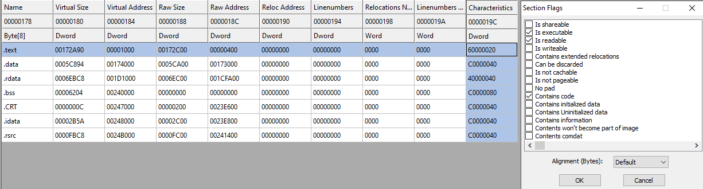
IMAGE_SCN_CNT_CODEالقسم يحمل تعليمات برمجية يمكن تنفيذهاIMAGE_SCN_CNT_INITIALIZED_DATAالقسم يحمل بيانات مهيئةIMAGE_SCN_CNT_UNINITIALIZED_DATAالقسم يحمل بيانات غير مهيئة سيتم تهيئتها عند التشغيلIMAGE_SCN_MEM_SHAREDيمكن مشاركة محتوي الـ section في الذاكرةIMAGE_SCN_MEM_EXECUTEيمكن تنفيذ البيانات داخل الـ section كتعليمات لغة ألةIMAGE_SCN_MEM_READيمكن قراءة محتوي الـ section في الذاكرةIMAGE_SCN_MEM_WRITEيمكن التعديل علي محتوي الـ section في الذاكرةIMAGE_SCN_MEM_NOT_PAGEDالـ Pageable memory هي المنقطة من الذاكرة التي يمكن نقل محتواها بين الذاكرة و وحدة تخزين ثانوية، بشكل إفتراضي كل ما يدخل في نطاق مساحة ذاكرة المستخدم User memory space هو pageable. ما يفعله الـIMAGE_SCN_MEM_NOT_PAGEDهو منع حدوث ذلك حيث تبقي المنطقة المعنية من الذاكرة (في تلك الحالة الـ section) دائما فالذاكرة.
Predefined Sections
تحتوي الأقسام على محتوى الملف، بما في ذلك التعليمات البرمجية والبيانات والموارد والمعلومات التنفيذية الأخرى، يحتوي كل قسم على header يحدد خصائص و محتوي القسم و body يحتوي علي البيانات الخاصة بالقسم. من المهم معرفة احتواء الـ Executable image عادة علي تسع أقسام محددة مسبقا هم:
91.text2.bss3.rdata4.data5.pdata6.rsrc7.edata8.idata9.debug
مع ذلك لا تحتاج الـ Executable image دائما الي كل هذه الأقسام، بينما قد يحدد بعض الأقسام الحاجة لأقسام أخري، فيما يلي مناقشة للأقسام الأكثر اهمية و شيوعا في الـ PE files:
Executable code section, .text
في هذا القسم يتم جمع جميع تعليمات لغة الألة التي سيتم تنفيذها داخل البرنامج بشكل افتراضي. هذا النمط في تخزين البيانات مفيد حيث يوفر سهولة في ادارة القسم اثناء عملية التشغيل للنظام و للمطور بسبب استخدام Windows لنظام ادارة ذاكرة إفتراضية يعتمد علي تقسيم البيانات الي صفحات ذاكرة page-based virtual memory management system كل منها يتمتع بخواص و صلاحيات مستقلة قد تختلف فيما بينها. الـ text section يوجد بداخله الـ C run time CRT المذكور بالأعلي بالأضافة إلي الـ Import address table IAT.
Data sections, .bss, .rdata, .data, .pdata
الـ bss section يمثل البيانات الغير مهيئة والتي سيتم تهيئتها اثناء عملية التشغيل مثل المتغيرات التي تمتلك مدي ثابت static extent
الـ radata section يمثل كل البيانات التي تمتلك فقط صلاحية بالقراءة read-only premission مثال النصوص literal strings و الثوابت constants
الـ data section يمثل كل المتغيرات الأخري بستثناء ذات النطاق التلقائي auomatic extent و التي تظهر علي المكدس stack، مثال الـ global variables الخاصة بالـ module
الـ pdata section يحمل مصفوفة من بدايات الدوال function entries يتم استخدامها في التعامل مع الإستثناءات exception handling و تحديد اي دالة سيتم تنفيذها في حالة حدوث استثناء معين
Resources section, .rsrc
الـ rsrc section يحتوي علي معلومات الموارد الخاصة بالـ Module، تتعد للموارد حيث يمكن ان تكون احدي الأنواع التالية:
211cursor2bitmap3icon4menu5dialog box6string table entry7font directory8font9accelerator table10application defined resource (raw data) 11message table entry12group cursor 13group icon 14version information 15dlginclude 16plug and play resource 17VXD18animated cursor19animated icon 20HTML21side-by-side assembly manifest و يختلف تركيب الـ rsrc عن باقي التراكيب حيث يتم تنسيقه كشجرة من الموارد resource tree في الـ IMAGE_RESOURCE_DIRECTORY والتي تشكل الـ root والـ nodes للتركيب:
81typedef struct _IMAGE_RESOURCE_DIRECTORY {2 DWORD Characteristics;3 DWORD TimeDateStamp;4 SHORT MajorVersion;5 SHORT MinorVersion;6 SHORT NumberOfNamedEntries;7 SHORT NumberOfIdEntries;8} IMAGE_RESOURCE_DIRECTORY, *PIMAGE_RESOURCE_DIRECTORY;Characteristics دائما يساوي صفر
TimeDateStamp يحمل قيمة تاريخ و وقت إنشاء المورد
MajorVersion رقم الأصدار الرئيسي للمورد
MinorVersion رقم الأصدار الثانوي للمورد
NumberOfNamedEntries عدد العناصر التي تمتلك اسماء
NumberOfIdEntries عدد العناصر التي تمتلك رقم تعريفي ID
بالنظر للـ IMAGE_RESOURCE_DIRECTORY لن تجد اي مؤشر للفروع nodes التالية، عوضا عن ذلك يتم استخدام عضوين التركيب NumberOfNamedEntries و NumberOfIdEntries لتحديد عدد السجلات الخاصة بالـ directory entry حيث تتبعه السجلات مباشرة في الـ data section.
و يتكون الـ directory entry من حقلين كما يتضح فالـ IMAGE_RESOURCE_DIRECTORY_ENTRY:
41typedef struct _IMAGE_RESOURCE_DIRECTORY_ENTRY {2 ULONG Name;3 ULONG OffsetToData;4} IMAGE_RESOURCE_DIRECTORY_ENTRY, *PIMAGE_RESOURCE_DIRECTORY_ENTRY;يتم استخدام الـ Name للتعريف عن إما نوع او أسم او لغة المورد و الـ TheOffsetToData دائما للتعريف عن اقربائه siblings من الفروع.
بالنسبة للـ leaf nodes و التي تمثل اخر مستوي من مستويات الـ Resource tree فهي تُعرف الحجم و الموقع لبيانات المورد. كل leaf node يتم تمثيلها بتركيب IMAGE_RESOURCE_DATA_ENTRY:
61typedef struct _IMAGE_RESOURCE_DATA_ENTRY {2 ULONG OffsetToData;3 ULONG Size;4 ULONG CodePage;5 ULONG Reserved;6} IMAGE_RESOURCE_DATA_ENTRY, *PIMAGE_RESOURCE_DATA_ENTRY;OffsetToData يحمل الـ relative virtual address RVA الخاص البيانات نسبتا للـ base address
Size حجم البيانات المُشار إليها عن طريق المؤشر offsetToData
الرسم التالي يوضح تقسيم الـ resource tree:

Export data section, .edata
الـ edata section يحمل المخرجات من مكتبات الربط الديناميكية DLL، هذا القسم يحمل export directory للوصول لمعلومات المخرجات export information و الذي يمتلك التركيب التالي:
131typedef struct _IMAGE_EXPORT_DIRECTORY {2 ULONG Characteristics;3 ULONG TimeDateStamp;4 USHORT MajorVersion;5 USHORT MinorVersion;6 ULONG Name;7 ULONG Base;8 ULONG NumberOfFunctions;9 ULONG NumberOfNames;10 PULONG *AddressOfFunctions;11 PULONG *AddressOfNames;12 PUSHORT *AddressOfNameOrdinals;13} IMAGE_EXPORT_DIRECTORY, *PIMAGE_EXPORT_DIRECTORY;Characteristics هذه القيمة محجوزة و يجب ان تساوي القيمة 0
TimeDateStamp وقت و تاريخ إنشاء البيانات فالـ export data
MajorVersion رقم الأصدار الرئيسي للـ export data
MinorVersion رقم الأصدار الثانوي للـ export data
Name يحمل الـ RVA للنص الذي يُعرف اسم الدالة
Base يحمل الرقم الترتيبي الأساسي للدوال المخرجة export functions حيث يحدد هذا الحقل نقطة البدء لجدول المخرجات export table و عادة ما تكون قيمته 1
NumberOfFunctions عدد الدوال functions في جدول عناوين المخرجات export address table.
NumberOfNames عدد اسماء الدوال في جدول عناوين المخرجات و يتطابق قيمته تلقائيا مع قيمة الـ NumberOfFunctions
AddressOfFunctions يحمل الـ offset لقائمة من بدايات الدوال المخرجة exported function entry points
AddressOfNames يحمل الـ offset لبداية قائمة يفصل الـ 0x00 بين عناصرها null-separated list من اسماء الدوال المخرجة exported function names
AddressOfNameOrdinals يحمل الـ RVA لعنوان الجدول الترتيبي ordinal table لأسماء الدوال
الصورة التالية توضح ما تكون عليه البيانات في الـ edata section:
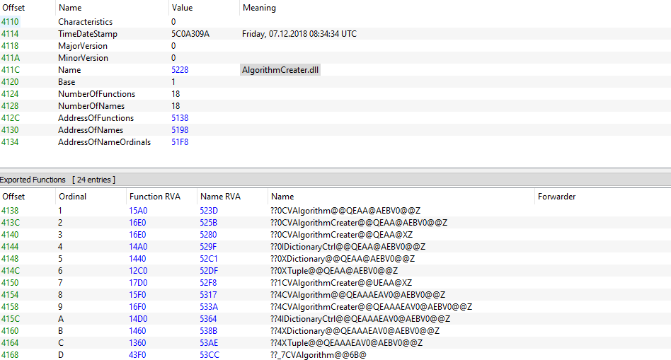
Import data section, .idata
عناوين الدوال الخاصة بمكتبات الربط الديناميكية في الذاكرة ليست ثابتة، بمجرد ان يقوم الـ Loader بتحميل الـ Executable image للذاكرة يقوم ببعض الوظائف منها تحميل مكتبات الربط الديناميكية و تصحيح عناوينها حتي يمكن للبرنامج استخدام تلك الدوال، يتم ذلك عن طريق قسم للواردات import section حيث يتم فيه تخزين معلومات مكتبات الربط الديناميكة و الدوال المستخدمة منها من قبل البرنامج:
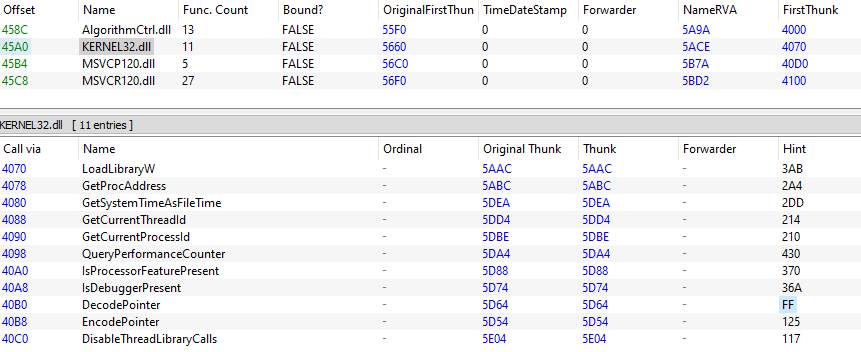
تبدأ بيانات الواردات بالـ Import Directory Table او الـ Import table للإختصار، حيث يحتوي علي معلومات العناوين المستخدمة في عملية إصلاح fixup بدايات الدوال DLL entries، و يتكون الـ import directory من مصفوفة من تركيب IMAGE_IMPORT_DESCRIPTOR يحمل كل عضو فالمصفوفة المعلومات الخاصة بإحدي مكتبات الربط الديناميكية المستخدمة بالبرنامج، يتم التعريف عن تركيب IMAGE_IMPORT_DESCRIPTOR علي النحو التالي:
111typedef struct _IMAGE_IMPORT_DESCRIPTOR{2 union {3 DWORD Characteristics;4 DWORD OriginalFirstThunk; // RVA of ILT5 };6 ...7 DWORD ForwarderChain;8 DWORD Name;9 DWORD FirstThunk;10 ...11} IMAGE_IMPORT_DESCRIPTOR;OriginalFirstThunk يحتوي علي الـ RVA للـ Import LookUp Table ILT او للـ Import Name Table INT، و يحتوي الـ ILT علي معلومات كيفية التعامل مع البيانات الورادة عن طريق الترتيب اما الـ INT فعن طريق الأسم.
Name يحمل الـ RVA لقيمة نصية تمثل اسم المكتبة المستخدمة و التي سيتم منها الحصول علي البيانات الواردة import information مثال KERNEL32.dll
FirstThunk و يحمل الـ RVA للـ Import Address Table IAT
والـ Import Address Table هو جدول من مؤشرات الدوال التي سيتم استخدامها اثناء عملية التشغيل والتي يتم الوصول لها عن طريق استدعاء الدالة مباشرة بستخدام المؤشر مثال:
11CALL 00401D82 ; \GetModuleHandleAاو عن طريق jump للـ thunk table مثال:
11JMP DWORD PTR DS:[40204C] ; KERNEL32.GetModuleHandleAقبل تحميل الملف للذاكرة يشير الـ OriginalFirstThunk لنفس تركيب الـ IMAGE_THUNK_DATA التي يشير ليها FirstThunk لكن في الذاكرة يختلف الأمر حيث يشير الـ OriginalFirstThunk بعد تحميله للعنوان الخاص بالدالة في الذاكرة، الصورة التالية توضح عملية تصحيح العناوين و تبديل محتوي الـ Import Address Table بمؤشرات صالحة لدوال المكتبات:
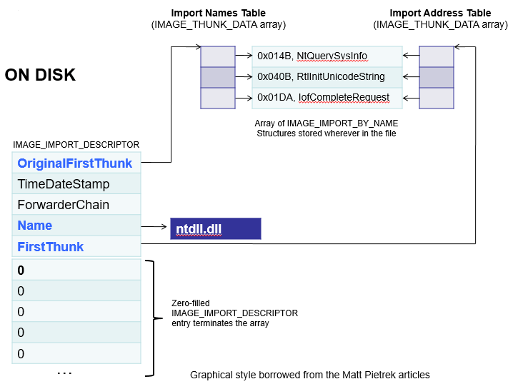
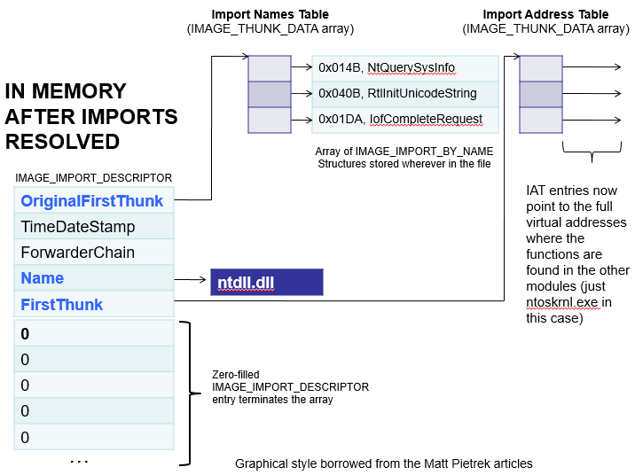
لكل دالة واردة يستخدمها البرنامج هناك تركيب من الـ IMAGE_THUNK_DATA و التي تُعرف المعلومات اللازمة للتعامل و استخدام الدالة علي النحو التالي:
81typedef struct _IMAGE_THUNK_DATA {2 union {3 ...4 PDWORD Function;5 DWORD Ordinal;6 PIMAGE_IMPORT_BY_NAME AddressOfData;7 }u1;8} IMAGE_THUNK_DATA32;و تخدم الـ IMAGE_THUNK_DATA غرضين رئيسيين فالـ IAT إما ان يحمل ترتيب الدوال الواردة او الـ RVA للتركيب IMAGE_IMPORT_BY_NAME:
51typedef struct _IMAGE_IMPORT_BY_NAME {2 WORD Hint;3 BYTE Name[1];4} IMAGE_IMPORT_BY_NAME, *PIMAGE_IMPORT_BY_NAME;5Hint يحمل مؤشر index لمكان وجود الدالة المراد استخدامها داخل الـ Export Address Table الخاص بمكتبة الربط الديناميكي حتي يتمكن الـ loader من الوصول للدالة عند مراجعة جدول المخرجات الخاص بالمكتبة DLL’s Export Address Table
Name يحمل قيمة نصية تساوي الأسم الخاص بالدالة الواردة
thread local storage, .tls
يدعم نظام التشغيل Windows وجود اكثر من Thread واحد للـ Process، لكل Thread يتم تخصيص مساحة تخزينية محلية تسمي thread local storage TLS. لذلك في كل مرة يتم فيها إنشاء thread يتم بالضرورة إنشاء TLS لهذا الـ thread و يتم استخدام الـ tls section لتحديد المواصفات التلقائية التي سيكون عليها الـ TLS، كون التعليمات داخل الـ tls section تتم قبل بدأ الـ thread و كون لإنشاء process يجب إنشاء thread رئيسي في بداية البرنامج يجعل من الـ tls ييبدأ حتي قبل الـ entry point للبرنامج، هذا الأمر جعل مطوري البرامج الخبيثة يتجهون في بعض الأحيان الي استخدام الـ tls section لتنفيذ ما كانت البرمجية الخبيثة ستفعله في محاولة لتضليل المُحلل.
المصادر
- https://docs.microsoft.com/en-us/windows/win32/debug/pe-format
- https://en.wikipedia.org/wiki/Portable_Executable
- https://docs.microsoft.com/en-us/windows/win32/api/winnt/ns-winnt-image_optional_header32
- https://docs.microsoft.com/en-us/windows/win32/api/winnt/ns-winnt-image_optional_header64
- https://docs.microsoft.com/en-us/windows/win32/api/winnt/ns-winnt-image_section_header
- https://docs.microsoft.com/en-us/windows/win32/api/winnt/ns-winnt-image_nt_headers64
- https://docs.microsoft.com/en-us/windows/win32/api/winnt/ns-winnt-image_nt_headers32
- https://docs.microsoft.com/en-us/windows/win32/api/winnt/ns-winnt-process_mitigation_aslr_policy
- https://docs.microsoft.com/en-us/windows/win32/win7appqual/dep-nx-protection
- https://blog.netspi.com/verifying-aslr-dep-and-safeseh-with-powershell/
- http://www.openrce.org/reference_library/files/reference/PE%20Format.pdf
- http://uploads.7bit.net.ru/2013-02/1360716397-pecoff_v8.pdf
- https://media.blackhat.com/bh-us-11/Vuksan/BH_US_11_VuksanPericin_PECOFF_WP.pdf
- https://github.com/leecade/reverse-engineering-for-beginners/blob/master/Chapter-68/Windows-NT.md
- https://www.sans.org/blog/dealing-with-aslr-when-analyzing-malware-on-windows-8-1/
- https://stackoverflow.com/questions/41910841/what-is-the-isolated-image-attribute-in-a-pe
- https://docs.microsoft.com/en-us/windows/win32/sbscs/manifest-files-reference?redirectedfrom=MSDN
- https://docs.microsoft.com/en-us/cpp/build/reference/allowisolation?redirectedfrom=MSDN&view=vs-2019
- https://stackoverflow.com/questions/41910841/what-is-the-isolated-image-attribute-in-a-pe
- https://docs.microsoft.com/en-us/dotnet/standard/assembly/manifest
- https://docs.microsoft.com/en-us/windows/win32/sbscs/application-manifests
- http://csi-windows.com/toolkit/240-great-pe-editor-for-internal-manifests
- https://docs.microsoft.com/en-us/windows/win32/debug/structured-exception-handling
- https://docs.microsoft.com/en-us/cpp/cpp/try-except-statement?view=vs-2019
- https://docs.microsoft.com/en-us/cpp/cpp/exception-handling-differences?view=vs-2019
- https://blog.kowalczyk.info/articles/pefileformat.html
- https://www.quora.com/What-is-the-difference-between-pageable-and-non-pageable-memory-Is-user-memory-space-pageable-or-non-pageable
- https://docs.microsoft.com/en-us/windows-hardware/drivers/kernel/making-drivers-pageable
- https://tech-zealots.com/malware-analysis/understanding-concepts-of-va-rva-and-offset/
- https://tech-zealots.com/malware-analysis/journey-towards-import-address-table-of-an-executable-file
- https://tech-zealots.com/malware-analysis/pe-portable-executable-structure-malware-analysis-part-2
- https://resources.infosecinstitute.com/2-malware-researchers-handbook-demystifying-pe-file/#gref
- https://resources.infosecinstitute.com/malware-researchers-handbook/#gref
- https://keystrokes2016.wordpress.com/2016/06/03/pe-file-structure-sections
- https://github.com/mmn3mm/peresources
الأدوات